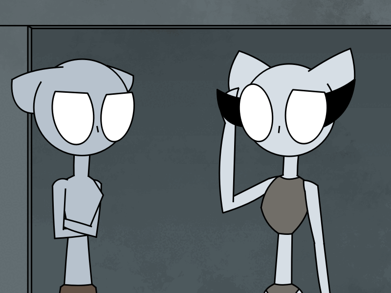
... ...
... ...
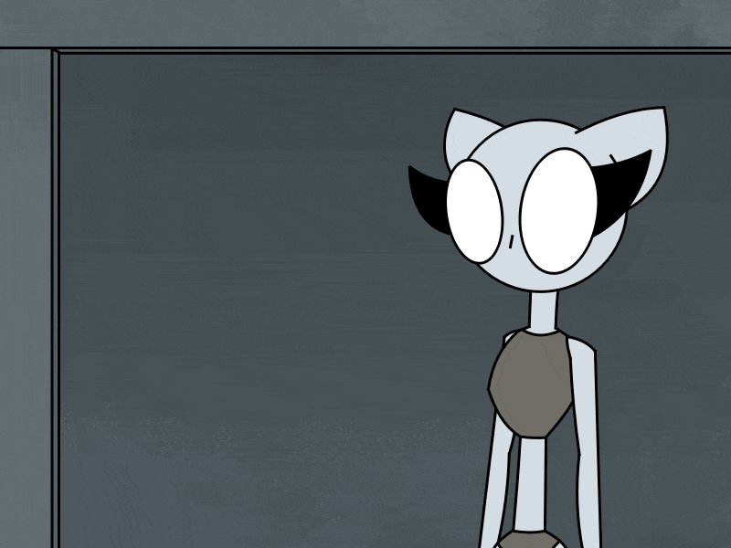
"Fuck it. Let's leave this area and find something to eat."
"We can always try later can we?" Nisch said to her give-up brother. "We're more lucky finding something edible in the junk
than coming up with a job Nisch!" Julp replied.
Whilst the twins searched for some edible junk, Nisch found a poster for something interesting.
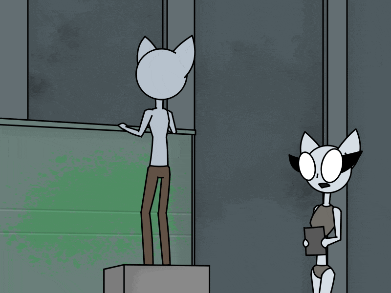
"Brother! Look at this!"
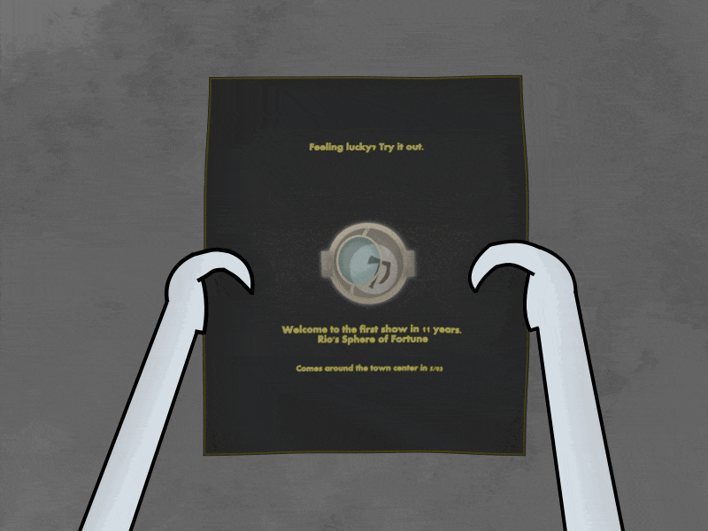
"The name Rio seems familiar to me.." Nisch said. "Me too actually.." Julp replied.
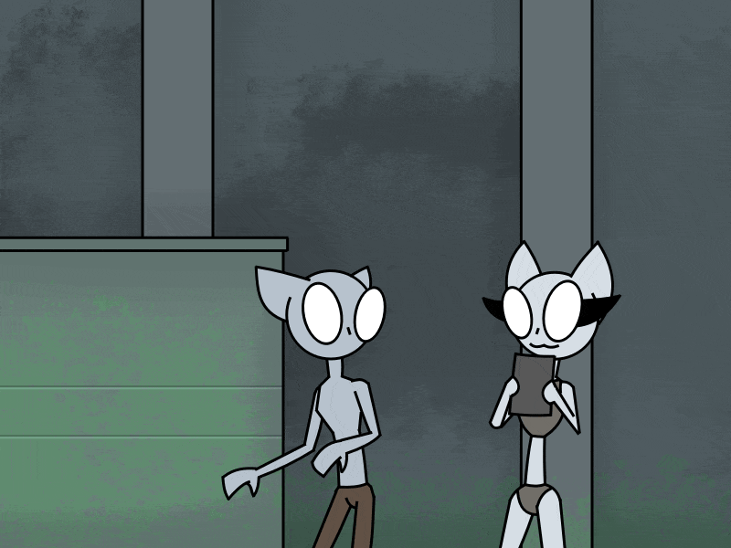
"Wait! I remember! He's the guy that arranged those lotteries in the past!"
Julp said in an alert "You don't need to scream that to me Nisch!"
Nisch kept talking exitingly "It's tommorrow! We can join in and get money from it!"
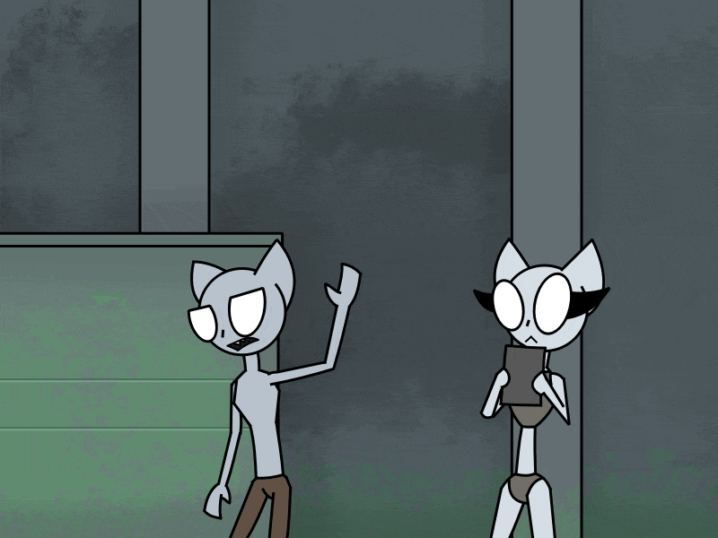
"Nisch! I'm sorry but we can't go to any lotteries." Julp replied getting Nisch calm who asked "Why not?". Julp replied
"Cause we got too much to do right now. We're not that lucky to win on a lottery either so forget it."
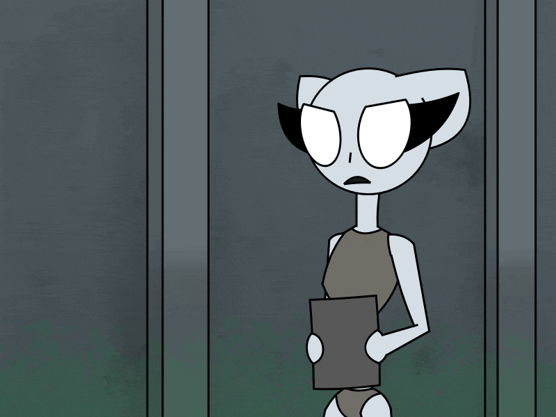
"And now you're negative again.. Can't we at least try to do it even if we're unlucky?"
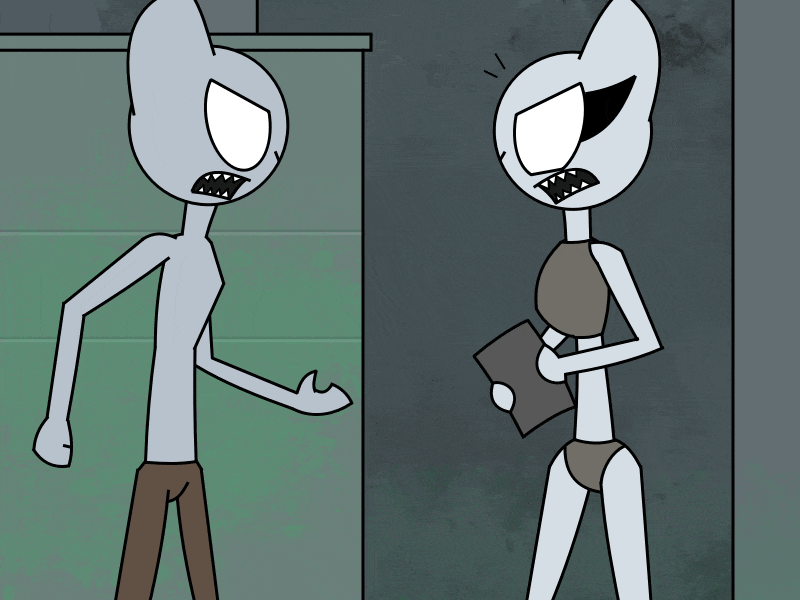
"No we can't! It's pointless and a waste of time!" Julp argued. "You always do this when we get an opportunity to regain
a wealth! It's like you want to be homeless! Do you want to live on the streets?!" Nisch argued back. "It's because we always
go back to the same spot after we lose all of it. I'm tired of having things stripped from me and I won't go to any more
lotteries!" Julp said back.
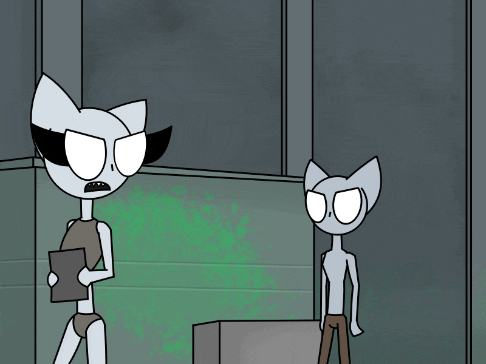
"Okay! I'm going to it myself and I will NOT go back to eating trash ever again! You'll hope that I will feel pity and share my
victory with you!"
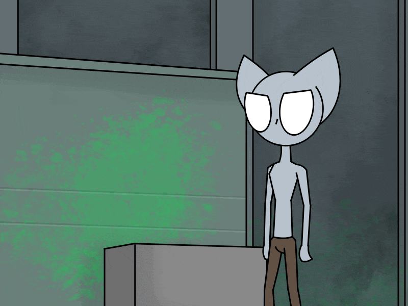
So julp stood there watching as his sister walked out of the alley. Wondering if she'll make it in the lottery.
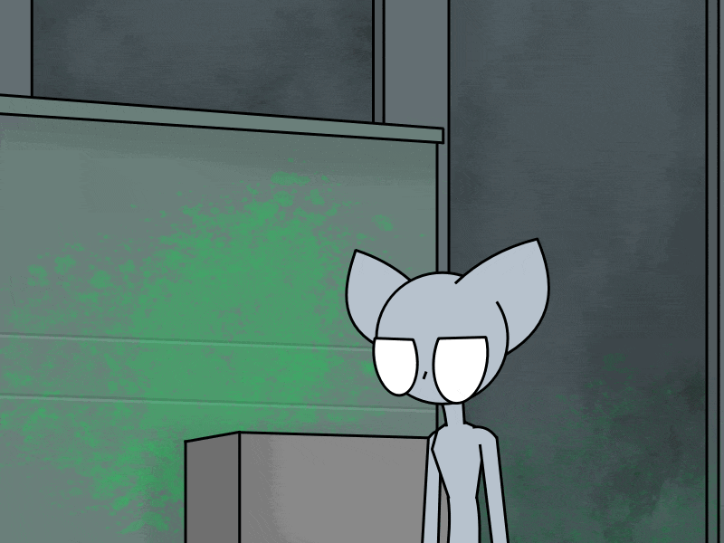
Then he remembered that he's hungry and hopes to find something more edible in the trash.
Back |
Part1 |
Part3